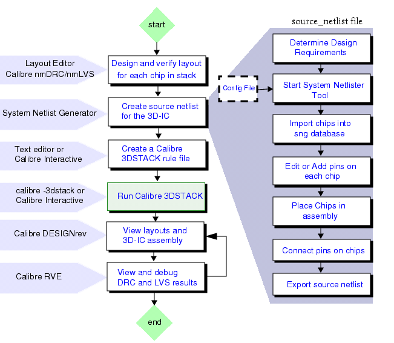

The System
Netlist Generator can be invoked from Calibre Interactive to generate
a netlist from an existing rule file or it can be used in a stand-alone
flow.
The System Netlist Generator workflow
is illustrated in the following figure.
System Netlist Generator Workflow